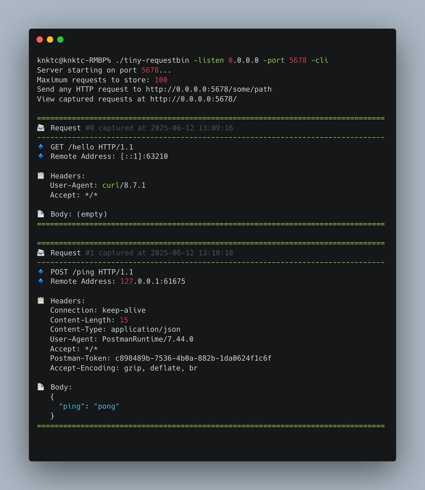

While revisiting some of my open-source projects recently, I took another look at the GitHub page for tiny-requestbin. It has clearly grown beyond being “just a tiny request catcher” and feels like a very practical tool for local debugging, webhook integration testing, and quick HTTP request inspection.
The project is written in Go and keeps its goals simple: minimal dependencies, fast startup, and a straightforward way to inspect incoming HTTP requests.
If you often need to verify third-party callbacks, debug inbound requests to your own service, or just capture a few HTTP requests to see what is actually being sent, this tool is quite handy.
What this project does
tiny-requestbin is a lightweight HTTP request inspection and debugging tool. Once started, it captures HTTP requests sent to the service and presents them in a way that is easy to inspect, including:
- request method
- request path
- request headers
- request body
- and the full request details
The repository README also highlights a few core features clearly:
- Lightweight and fast: simple implementation with very few dependencies
- Request inspection: view detailed information about incoming HTTP requests
- Web UI: inspect captured requests in the browser
- CLI mode: print request details directly in the terminal
- Local-only runtime: everything stays on your machine without depending on an external service
I personally like tools with this kind of sharp scope. It does not try to be a huge platform. It just focuses on doing one thing well: helping you inspect requests.
Several easy installation options
The repository homepage offers multiple installation methods, which cover most common local debugging and deployment scenarios.
1. Docker
If you just want to get it running quickly, the README recommends using Docker directly:
1 | docker run -p 8282:8282 knktc/tiny-requestbin |
You can also pass custom parameters such as the listen address, port, and maximum number of stored requests:
1 | docker run -p 8282:8282 knktc/tiny-requestbin -port 8282 -listen 0.0.0.0 -max 1000 |
The repository also ships with a docker-compose.yml, so docker-compose up -d works as well.
2. Helm
If you already have a Kubernetes environment, the project also provides a Helm chart:
1 | helm install my-requestbin helm/tiny-requestbin/ |
The README includes examples for customizing config.max, service.type, and enabling HTTPRoute, which makes the Kubernetes path pretty convenient.
3. go install
Since the project itself is written in Go, installing it that way is also very natural:
1 | go install github.com/knktc/tiny-requestbin@latest |
4. Build from source
If you prefer compiling it yourself, that is straightforward too:
1 | git clone https://github.com/knktc/tiny-requestbin.git |
How to use it
The default startup command is intentionally simple:
1 | tiny-requestbin |
Default flags:
-port: listening port, default8282-listen: listening address, default127.0.0.1-max: maximum number of stored requests, default100-cli: whether to enable CLI output mode, defaultfalse
For example, the following command makes the service listen on 0.0.0.0:9000, keeps up to 1000 requests, and also prints them to the terminal:
1 | tiny-requestbin -port 9000 -listen 0.0.0.0 -max 1000 -cli |
Its basic workflow is very simple:
- Start the service.
- Send requests to
http://[listen-address]:[port]/any/path. - Visit the root path in the browser to inspect captured requests.
- If
-cliis enabled, the terminal will print them as well.
That makes it useful both for temporary local troubleshooting and as a small internal request sink inside a private network.
Two ways to inspect requests: terminal and web
The repository homepage includes two screenshots, and I also placed them here so the actual experience is easier to picture.
CLI mode screenshot
When -cli is enabled, incoming HTTP requests are printed directly in the terminal in a formatted way:

This mode is especially convenient when working on a server, in a container, or through a remote shell where opening a browser is less convenient.
Web UI screenshot
If you prefer a graphical view, you can simply open the web page and inspect request history there:

From the screenshot, the UI looks intentionally minimal. The focus is on showing request contents clearly without unnecessary distractions.
Good use cases
Based on the repository itself, I think tiny-requestbin is particularly useful for:
- debugging webhook callbacks from third-party platforms
- verifying what an application is actually sending over HTTP
- quickly spinning up a local request receiver during development
- temporarily observing request traffic in containers or Kubernetes
- inspecting request details directly in the terminal with
-cli
The fact that it is explicitly local only is also reassuring for many internal debugging scenarios, because the captured data stays on your machine.
A few extra points worth mentioning
There are also a few details on the GitHub page that I think are nice touches:
- the container image supports multiple architectures, including
linux/amd64andlinux/arm64 - multi-architecture images are built and published automatically with GitHub Actions
- the repository offers multiple entry points: Docker, Helm, and source builds
- the project uses the MIT License, which makes adoption and redistribution straightforward
The README also mentions that the project initially started with Gemini and was later iterated on with GitHub Copilot. That somehow fits the project’s overall character as well: lightweight, direct, and quick to evolve.
Final thoughts
If you are looking for a lightweight, Go-based, locally runnable HTTP request debugging tool that supports both web and CLI usage, I think tiny-requestbin is worth trying.
Project link:
Feel free to star the repository, and PRs or issues are always welcome.